Sistema de gestión para emprendimientos y pymes
Santino Solla · Joaquín Tosi
25 horaspor semana
dedica una pyme a cargar y cruzar datos a mano, entre planillas y aplicaciones.
Siete meses y medio de trabajo de una persona.
Intuit QuickBooks, encuesta a 630 empresas de EE. UU. de 10 a 99 empleados (2024). Horas al año, jornadas y meses: cálculo propio sobre ese promedio.
El problema
El negocio vive en el cuaderno, la planilla y el celular.
Y en la cabeza del dueño.
¿Alguna vez prestaste plata y no te acordaste a quién?
En un negocio, eso pasa todos los días.
El problema
Cada hora copiando datos es una hora menos para el negocio
25 horas por semana anotando, copiando planillas y contando la caja.
Podrían ir a lo que el negocio de verdad necesita. O, simplemente, a descansar.
El problema
Se vende un montón, y la plata no aparece
Una remera de $ 20.000 que costó $ 10.000.
Lo que el dueño cree que ganóLo que de verdad le quedó $ 10.000$ 3.700
Un ejemplo. Y sin contar el fiado que nadie anotó, ni lo que queda en el estante sin venderse.
Lo que hay
Los sistemas que existen son caros y complejos para empezar
Pensados para quien ya tiene un contador y una compu en el mostrador.
Dux Software
$ 43.560 por mes
Plan base, con IVA
Contagram
$ 71.269 por mes
Plan inicial, precio normal, con IVA
Nexo
$ 0 para empezar
Y $ 19.900 por mes cuando el negocio crece
Todo el negocio, en un solo sistema.
Ventas
$ 3.480.000
↗ 18,2 % vs. mes anterior
Ganancia bruta
$ 1.620.000
↗ 15,4 % vs. mes anterior
Gastos
$ 410.000
↘ 3,1 % vs. mes anterior
Resultado
$ 1.210.000
↗ 22,7 % vs. mes anterior
Ventas y gananciaVentas Ganancia
Dónde entró la plata
- Efectivo38 %
- Transferencia27 %
- Débito21 %
- Crédito14 %
Cómo surgió
Un problema que vimos de cerca una y otra vez
En un emprendimiento propio y en los de amigos, compañeros y familiares pasaba lo mismo.
- Emprendimientos que arrancanEl nuestro y los de gente cercana: muchas ganas y ningún sistema
- Todo anotado a manoPedidos por WhatsApp, cuentas en el cuaderno, el pizarrón y una planilla
- Las mismas preguntas en todos¿Cuánto me quedó? ¿Quién me debe? ¿Qué tengo que reponer?
- Así nació NexoPensado para el que recién arranca, y que crece con él
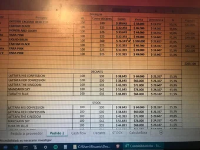
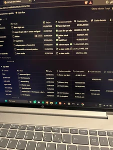
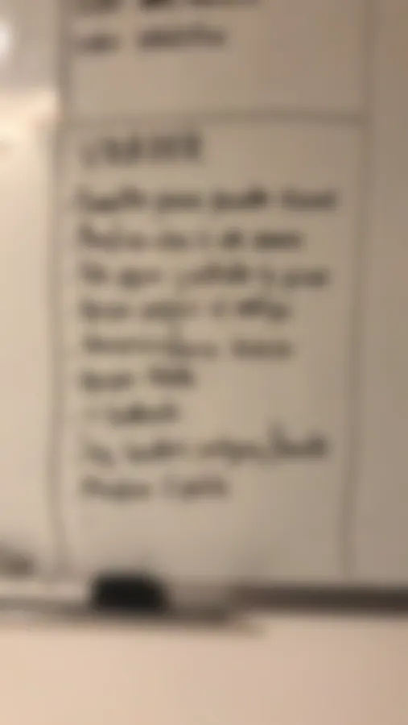
Un caso real de hace dos años
La idea
Nexo crece con el negocio
Lo puede usar el que recién arranca, gratis. Y cuando el negocio crece, Nexo crece con él.
Vender y saber cuánto se gana
- Mostrador y celular
- Stock y caja
- Quién debe y cuánto
Equipo, factura y venta online
- Hasta 3 personas
- Factura electrónica
- Tienda Nube y Mercado Libre
Varios locales y una IA que ayuda
- Asistente por texto y voz
- Varios negocios
- Compras desde la foto
Para quién
Nexo se adapta a cada tipo de negocio
Cada negocio prende las funciones que necesita. Es el mismo sistema armado distinto.
Empezar
Para arrancar de cero o con el negocio que ya tenés
Desde cero
La cuenta, el tipo de negocio y las funciones que necesita. En minutos.
Con lo que ya tenés
El stock, lo que te deben, lo que debés y la plata de cada cuenta.
Desde el celular
Pruébenlo mientras les contamos
- Entrar sin registrarse
- Vender en el mostrador
- El ingreso del gimnasio
- Cuánto deja cada venta
Entren como dueños de un negocio de ejemplo
nexosystem.duckdns.org/app#/probar
La solución
Todo el negocio en un solo lugar
Ventas, stock, caja, clientes y facturas, conectados.
- Ventas, ganancia, gastos y resultado del mes
- Contra el mes anterior y el mismo mes del año pasado
- Qué días y a qué hora se vende más
- Dónde entró la plata: efectivo, banco, Mercado Pago
- Quién vendió y cuánto
- Lo más vendido
- Lo que hay que mirar hoy: stock bajo, cobros vencidos
- Cada persona elige qué ver y en qué orden
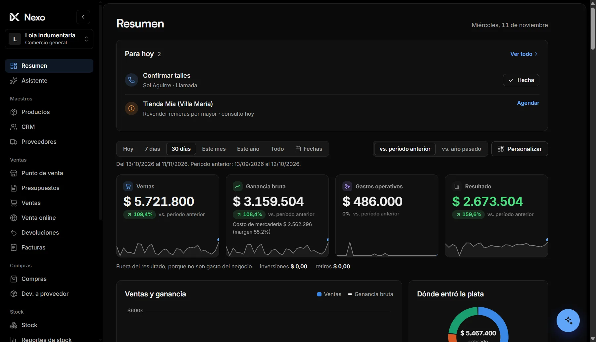
Productos
Todos los productos con su stock al día
Cada compra que se carga suma el stock y actualiza el costo. Y las ofertas se arman a medida.
- Talles, colores y códigos de barra
- Stock por depósito, con cada movimiento
- La compra recibida suma el stock
- El costo promedio de cada uno
- Ofertas en porcentaje, monto o precio fijo
- Para un producto, una categoría o todo
- Entre fechas y ciertos días de la semana
- Promos por cantidad: llevando 2…
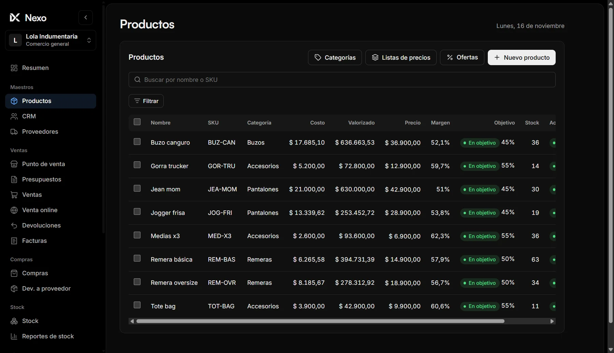
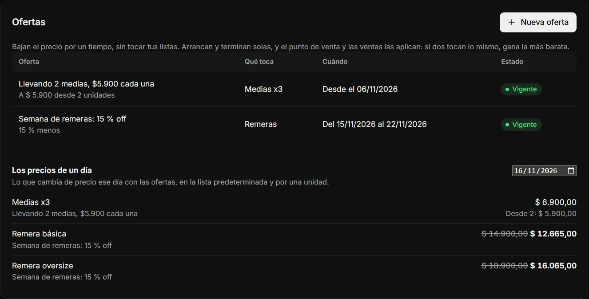
Vender
En el mostrador o desde el celular
Se busca el producto o se pasa el lector, y se cobra. El stock baja solo.
- Lector o la cámara del celular
- Etiquetas de la balanza
- Ofertas y promos, solas
- Cobro mixto, con vuelto
- QR de Mercado Pago
- Fiado a la cuenta del cliente
- Apertura y cierre de caja
- El empleado no ve costos
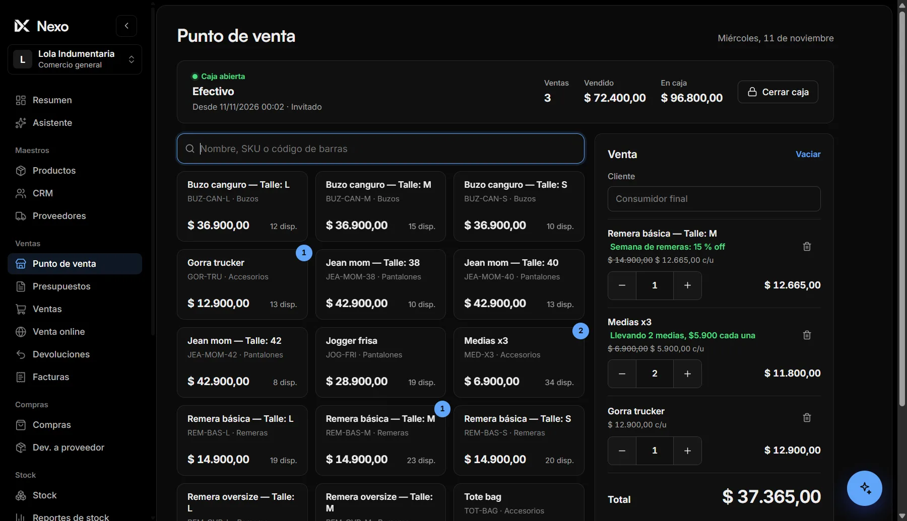
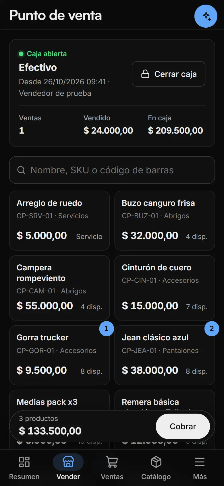
En cada venta
Cuánto deja cada venta
Un buzo y un jean por Instagram, en 3 cuotas y con envío. El cliente pagó $ 79.800 y quedaron $ 22.369: la mitad de lo normal en ese negocio.
Cada costo por separado, con su porcentaje y contra el promedio. Lo que casi ningún comercio sabe en el momento.
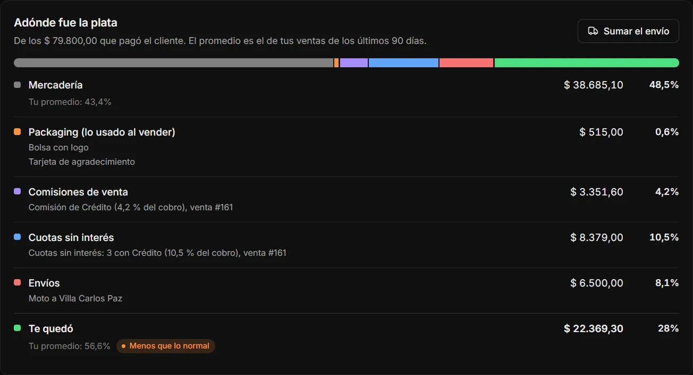
El asistente
Cargar una venta escribiendo o hablando
Se escribe o se dice en voz alta, y Nexo arma la venta, la compra o el gasto. No guarda nada hasta que una persona confirma.
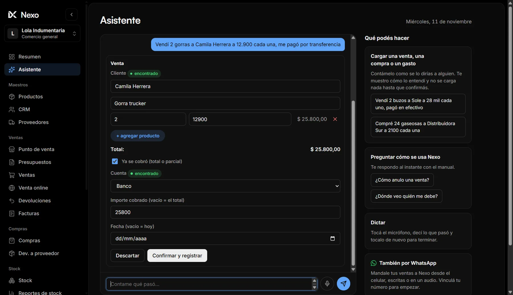
Lo mismo por WhatsApp En prueba
Se le manda a Nexo un mensaje o una nota de voz, contesta cómo lo entendió y se confirma con un botón.
- Cliente
- Camila Herrera
- Producto
- 2 × Gorra trucker
- Total
- $ 25.800
- Cobro
- Banco
Compras
Una foto de la factura del proveedor, y la compra se carga sola
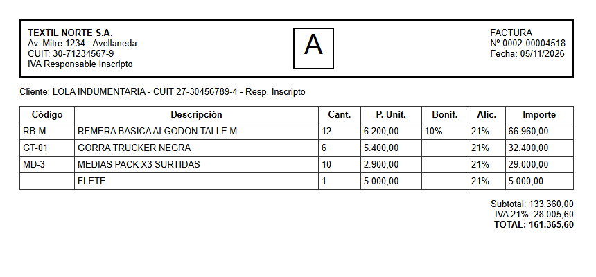
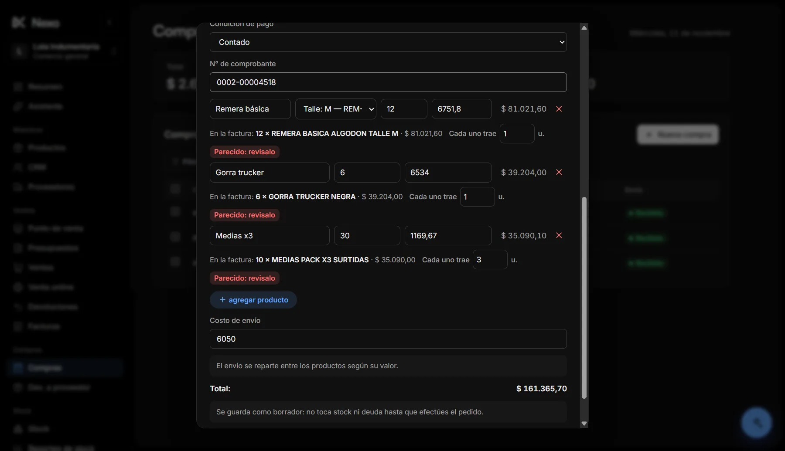
Facturación
La factura sale con el CAE de ARCA, sin entrar a otra página
Nexo elige la letra, discrimina el IVA y pide el CAE. El libro IVA se arma solo.
Probado contra ARCA en su ambiente de prueba. Falta la habilitación para producción.
Responsable inscripto
0003-00000124
11/11/2026
| Descripción | Importe |
|---|---|
| 2 × Remera básica | $ 25.330 |
| 1 × Gorra trucker | $ 12.900 |
Total$ 38.230
CAE 75461234567890 · vence 21/11/2026
Factura electrónica
Nexo factura ante ARCA en nombre del negocio
La factura de prueba
El ambiente de práctica de ARCA: funciona igual que el real y da un CAE, pero de prueba. Así probamos la factura A, la B y la nota de crédito.
Comprobante de prueba – sin validez fiscal
La factura real
El mismo camino, con el CUIT de Nexo habilitado en ARCA. El CAE es válido y la factura se puede constatar en ARCA.
Autorizada por ARCA · CAE válido
Venta online
Vender en todos lados, con un solo stock
Los pedidos de la tienda online entran solos, el stock se actualiza en todos lados y se ve cuánto deja cada canal.
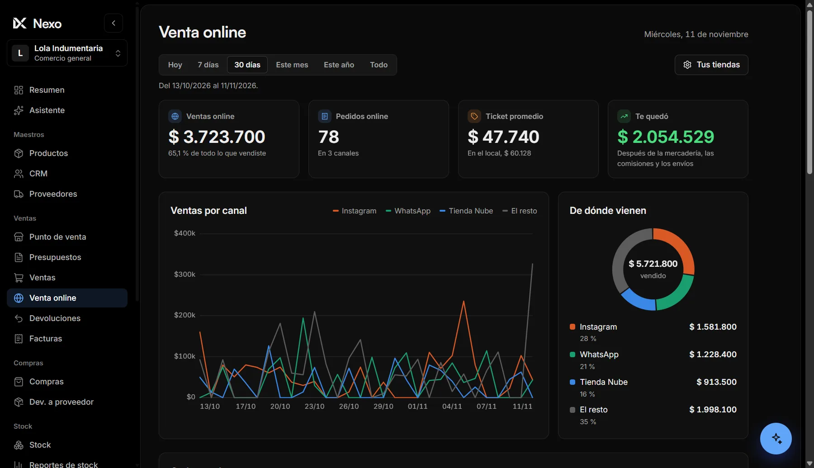
Cobrar
Cobrar con Mercado Pago, sin cargar nada a mano
Cada negocio conecta su cuenta y cobra lo que vende en el mostrador, por WhatsApp o en Instagram.
- QR en el mostrador: el cliente paga y la venta se cierra sola
- Link de pago para mandar por WhatsApp
- El pago entra solo como cobro de la venta
- La comisión y las cuotas, como gastos de esa venta
- Lo que no coincide queda para revisar
Cobrar con Mercado Pago$ 12.900
Esperando el pago…✓ Pagado: la venta #1291 se cerró sola
- Cobrado
- $ 12.900
- Comisión de Mercado Pago
- $ 103 0,8 %
- Entra a la cuenta
- $ 12.797
Para cada rubro: el gimnasio
El socio entra solo, y la recepción sabe al instante quién debe
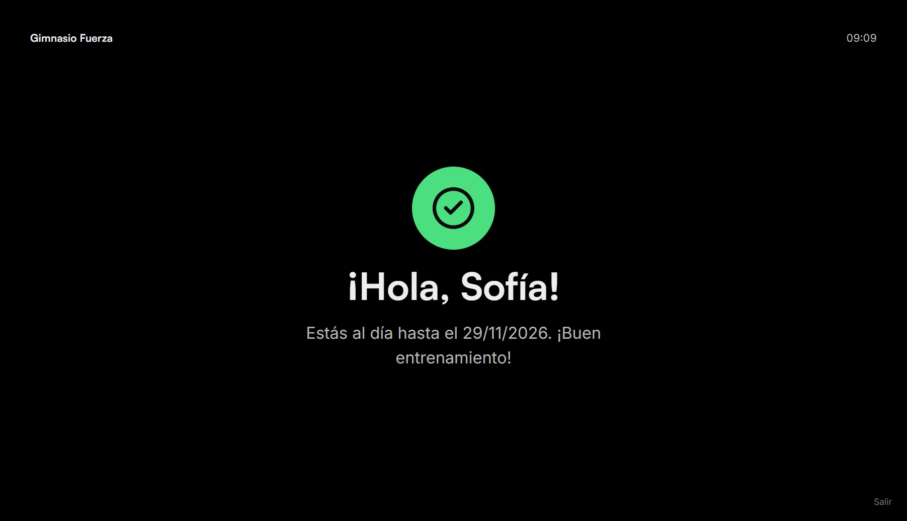
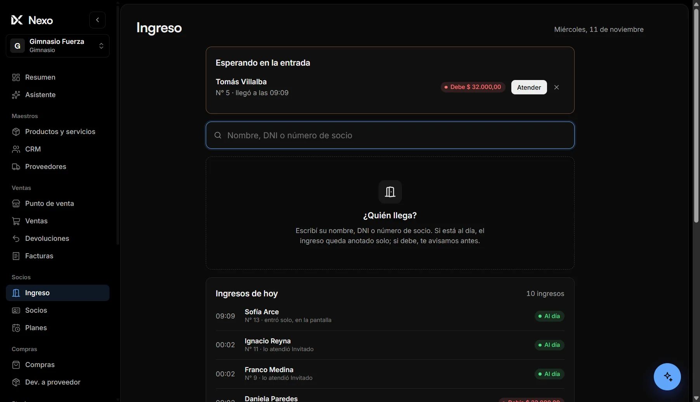
Y además
Más funciones de Nexo
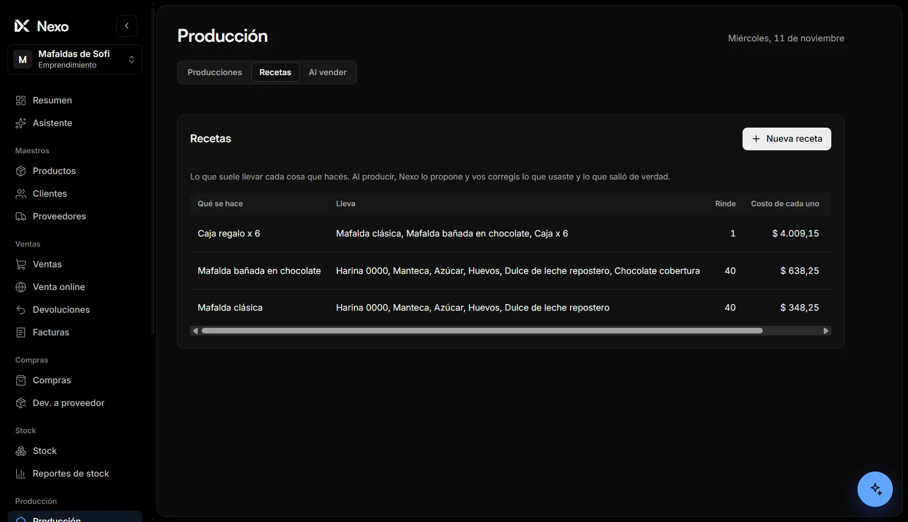
- Presupuestosse convierten en venta
- Cuentas corrientessaldos y vencimientos
- Listas de precios y ofertasminorista, mayorista y promociones
- Varios depósitosstock por depósito y transferencias
- Devolucionescon nota de crédito y reingreso de stock
- CRMconsultas y seguimiento de clientes
- Trabajos y abonosórdenes de trabajo y cobros periódicos
- Avisos en el celularventas online, pagos y stock bajo
- Varios negociosen una misma cuenta
- Auditoríacada cambio, con usuario y fecha
Cómo está hecho
El mapa de Nexo
Cómo llega una mejora:El código, en GitHub→395 pruebas automáticas→Se publica solo en el servidorYAML · Bash
Confianza
Por qué los datos están seguros
Cada negocio ve solo lo suyo
Muchos negocios comparten el servidor, pero ninguno puede ver los datos de otro.
Contraseñas que nadie lee
Se guardan cifradas, ni nosotros las vemos. Y cada mail se confirma con un código.
Todo viaja cifrado
La conexión va siempre por HTTPS, como la de un banco.
Una copia cada noche
Cifrada y en otro proveedor. Probamos restaurarla.
Permisos y registro
El empleado nunca recibe los costos, y queda anotado quién hizo cada cosa.
Nada sale sin probar
395 pruebas automáticas corren en cada cambio. Si una falla, no se publica.
Propuesta de valor y modelo de negocio
Nexo ordena el negocio desde el primer día, y crece con él.
Una suscripción por mes: se empieza gratis y se paga cuando el negocio crece.
Gratis
$ 0
- Punto de venta, stock, caja y CRM
- Hasta 100 productos y 300 ventas por mes
- Un usuario
Emprendedor
$ 19.900
- Sin topes de productos ni ventas
- Hasta 3 usuarios
- Factura electrónica y tiendas online
Pro
$ 34.900
- Asistente con IA, por texto y voz
- Compras desde la foto de la factura
- Usuarios y negocios sin tope
Precios finales por mes. El plan de entrada de Dux cuesta $ 43.560 y el de Contagram, $ 71.269.
Viabilidad
Cuántos clientes hay y cuántos necesitamos
El mercado en negocios
Después: Córdoba capital, a 36 km, con 22 veces más locales.
El punto de equilibrio: cuántos hacen falta
5 clientes
Pagan el servidor, el dominio y el contador.
84 clientes
Pagan también los sueldos base de los dos.
Los 83 del primer año son casi los 84 que pagan todo: con Alta Gracia sola, Nexo ya casi se sostiene.
Costos fijos: $ 1.515.040 por mes, el 95 % en sueldos. Calculado con todos los clientes en el plan Emprendedor.
Gestión ágil
Cómo trabajamos con IA
Programamos con Claude Code, una IA que escribe código dentro del proyecto. Nosotros decidimos y controlamos cada paso.
- DecidimosQué hace Nexo, para quién y qué va primero.
- Lo escribimosLas reglas del negocio, un plan en etapas chicas y una bitácora.
- La IA programaCon habilidades extra para el diseño, los gráficos y los videos.
- Se prueba y se revisa395 pruebas, agentes que revisan el código y nosotros.
- Se publica soloEn el servidor, en unos cinco minutos.
Las herramientas que usamos
Lo que viene
Esto recién empieza
Lo que ya funciona es la base. Lo que sigue es hacerlo más fuerte y sumarle muchas más funciones.
Más fuerte por dentro
- Una base de datos más grande, para miles de negocios a la vez
- Servidores con más capacidad, en más de un lugar
- Una IA con más capacidad, para que todos la usen sin esperar
- La factura electrónica real, con el CUIT de Nexo
Muchas más funciones
- Rappi y PedidosYaLos pedidos de delivery entran solos
- Tu tienda en un linkPara compartir por WhatsApp e Instagram
- Andreani y Correo ArgentinoLa etiqueta de envío sale desde la venta
- Hablarle a Nexo por WhatsApp"¿Cuánto vendí hoy?" y el resumen de cada noche
- Una IA que se adelantaAvisa qué reponer y arma el pedido
- Precios al díaSi sube un costo, propone el precio nuevo
- TurnosPara barberías, peluquerías y consultorios
- Mesas y comandasPara bares y restaurantes
El sistema que nos hubiera gustado tener desde el primer día
Ya funciona, y cualquier negocio lo puede empezar a usar hoy.
In English
A Saturday at the store
One day of a small business with Nexo. Santino is the owner and Joaquín is the voice of Nexo.
Pruébenlo con su negocio
Ustedes ordenan su negocio, y con lo que nos cuenten nosotros mejoramos Nexo. Nos ayudamos los dos.
@nexosystem.appSeguinos en Instagram
Sin registrarse, desde el celular
En GitHub, con el README y el manual